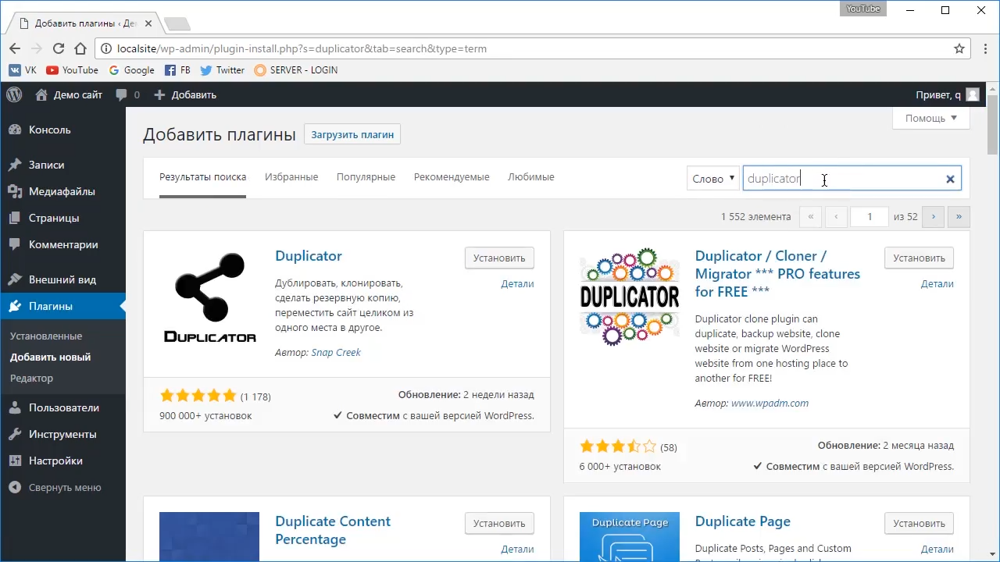
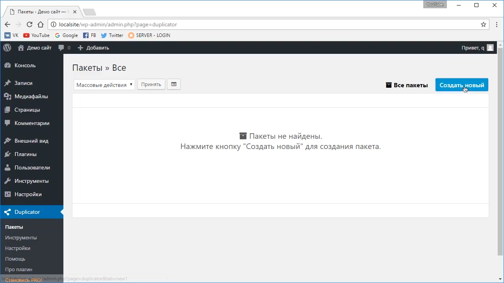
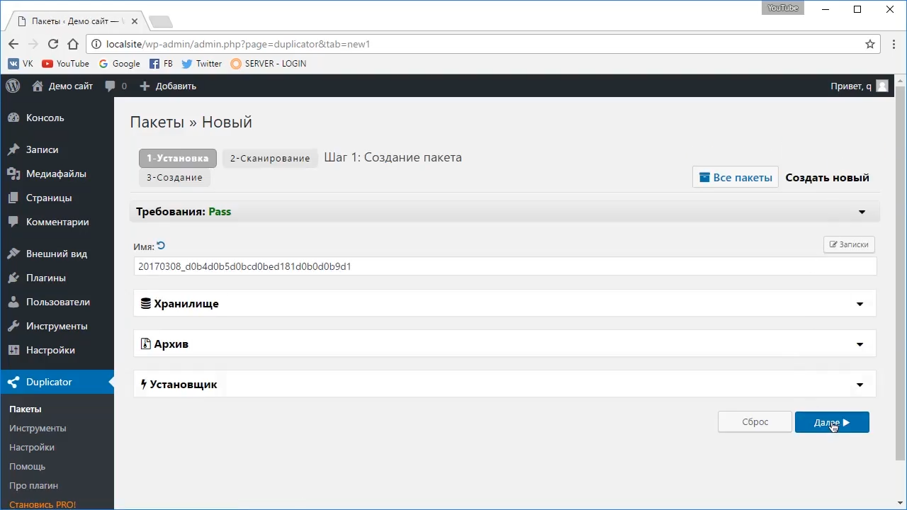
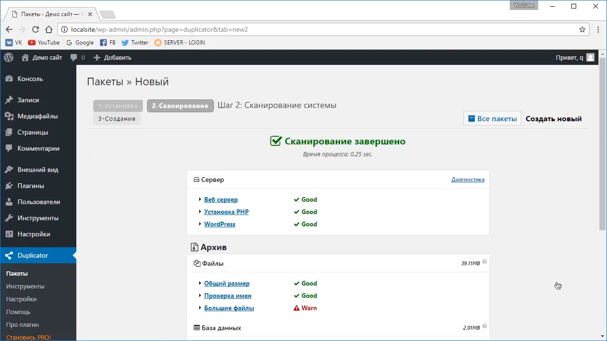
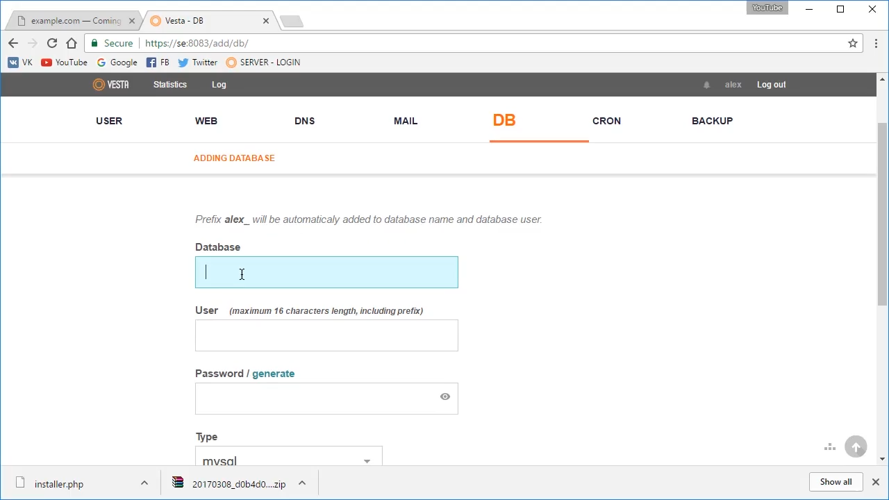
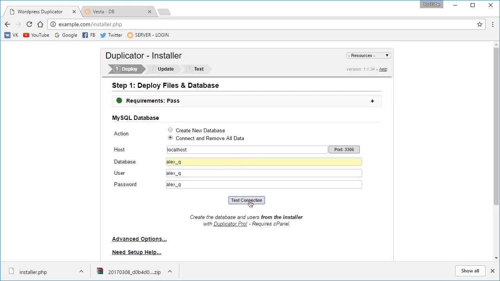
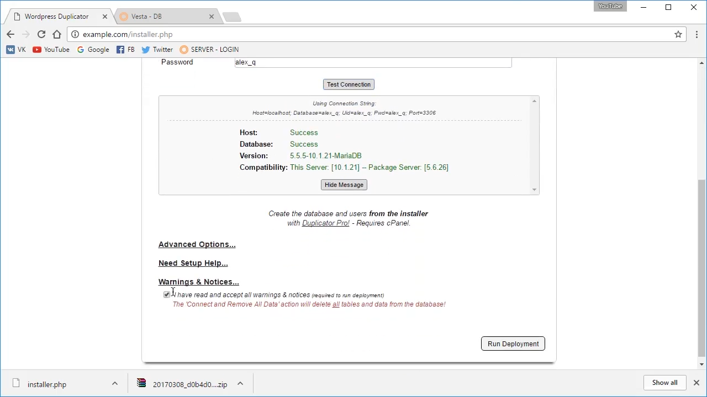
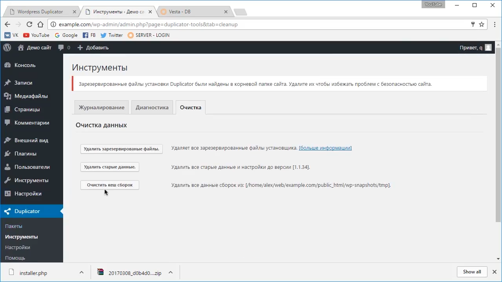

{kind=link}
{kind=link}
{kind=link}
{kind=link}
{kind=link}
{kind=link}
{kind=link}
{kind=link}

Процесс переноса сайта на другой хостинг или домен как правило не сложен. Всё что нужно - это скопировать файлы сайта и базу данных на новый хостинг. В случае с Wordpress это не совсем так. В отличие других CMS, WordPress хранит в базе абсолютные ссылки на домен, на который был установлен, поэтому простой экспорт/импорт базы возможен только в том случае, если домен остаётся прежним.
Если же использовать поиск с заменой по SQL файлу, то будет нарушена целостность сериализованных данных и собьются настройки темы и некоторых плагинов.
Если нужно перенести сайт на WordPress с локального сервера на хостинг или на другой домен лучше всего это делать через специальный плагин Duplicator
Идём в установщик плагинов и ищем Duplicator. 
Он будет выглядеть так: 
Нажимаем создать новый, далее и, не обращая внимание на предупреждения, ставим галочку и продолжаем процесс. 
Далее нужно создать базу данных на хостинге и закачать скаченный архив. 
Теперь переходим по ссылке ВАШ_САЙТ.COM/installer.php, вводим параметры БД и восстанавливаем сайт. 
На последнем этапе желательно очистить кэш установки, дабы уберечь незащищённые файлы от взлома 